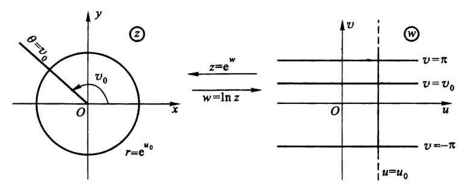

自然对数函数：Ln z=lnr+i(θ+2kπ)，k∈Z
- 推导：
- 设 f(z)=u+iv，由定义得 z=ef(z)=eu+iv=reiθ，即 {u=lnr (r>0)v=θ+2kπ
- 多值性：
- 因为自然指数函数是在 y 轴上以 2πi 为周期的，所以它的反函数也必定是以 2πi 为角形大小的多值函数
- 单值分支：{u+iv∣(k−1)π<v<kπ，k∈Z}
- 平行于横轴，宽度为 2π 的带状区域
- 支点：z=0 和 z=∞
- 支割线：负实轴
- 只要没有绕原点一周，那么角度改变量就小于 2π
- 解析性：
- 主值支：满足 −π<θ⩽π 的分支，此时 f(z)=ln∣z∣+iArg z
- 几何意义：
- 定义域上的长度 ⇔ 值域上 x 轴的数
- 定义域上的角度 ⇔ 值域上 y 轴的数
- Ln z 把向量的长短变为实部，把向量的角度变为虚部
